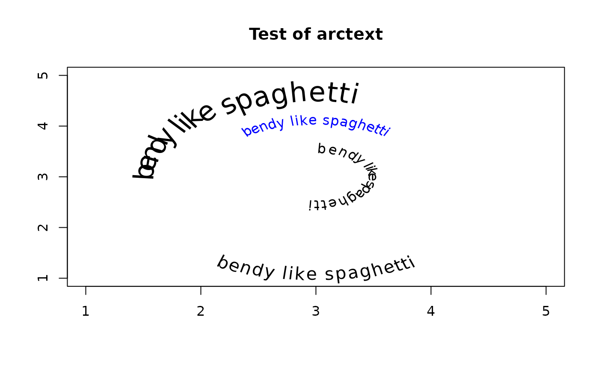

Display text on a circular arc
arctext.RdDisplays a character string on the circumference of an imaginary circle on an existing plot.
Usage
arctext(x,center=c(0,0),radius=1,start=NULL,middle=pi/2,end=NULL,stretch=1,
clockwise=TRUE,cex=NULL,...)Arguments
- x
A character string.
- center
The center of the circular arc in x/y user units.
- radius
The radius of the arc in user units.
- start
The starting position of the string in radians.
- middle
The middle position of the string in radians.
- end
The end position of the string in radians.
- stretch
How much to stretch the string for appearance.
- clockwise
Whether to print the string in the clockwise direction.
- cex
The character expansion factor.
- ...
additional arguments passed to text.
Details
arctext displays a string along a circular arc, rotating each letter. This may not work on all devices, as not all graphic devices can rotate text to arbitrary angles. The output looks best on a Postscript or similar device that can rotate text without distortion. Rotated text often looks very ragged on small bitmaps.
If the user passes a value for start, this will override any value passed to middle. If the plot area is not square, see par(pty="s"), the arc will be somewhat elliptical.
If the clockwise argument is TRUE, the string will be displayed in a clockwise direction and the orientation of the characters will be rotated pi radians (180 degrees). This is useful when the string is to be displayed on the bottom of the circumference.
Author
Jim Lemon - Thanks to Suhas Parandekar for the idea, Ted Toal for greatly improving the placement of the text and Andy South for providing the initial code for the clockwise argument.
Examples
plot(0, xlim = c(1, 5),ylim = c(1, 5),main = "Test of arctext", xlab = "",
ylab = "", type = "n")
arctext("bendy like spaghetti", center = c(3,3), col = "blue")
arctext("bendy like spaghetti", center = c(3,3), radius = 1.5, start = pi,
cex = 2)
arctext("bendy like spaghetti", center = c(3, 3),radius = 0.5,
start = pi/2, stretch = 1.2)
arctext("bendy like spaghetti", center = c(3, 3), radius = 1.7,
start = 4 * pi / 3, cex = 1.3, clockwise = FALSE)
